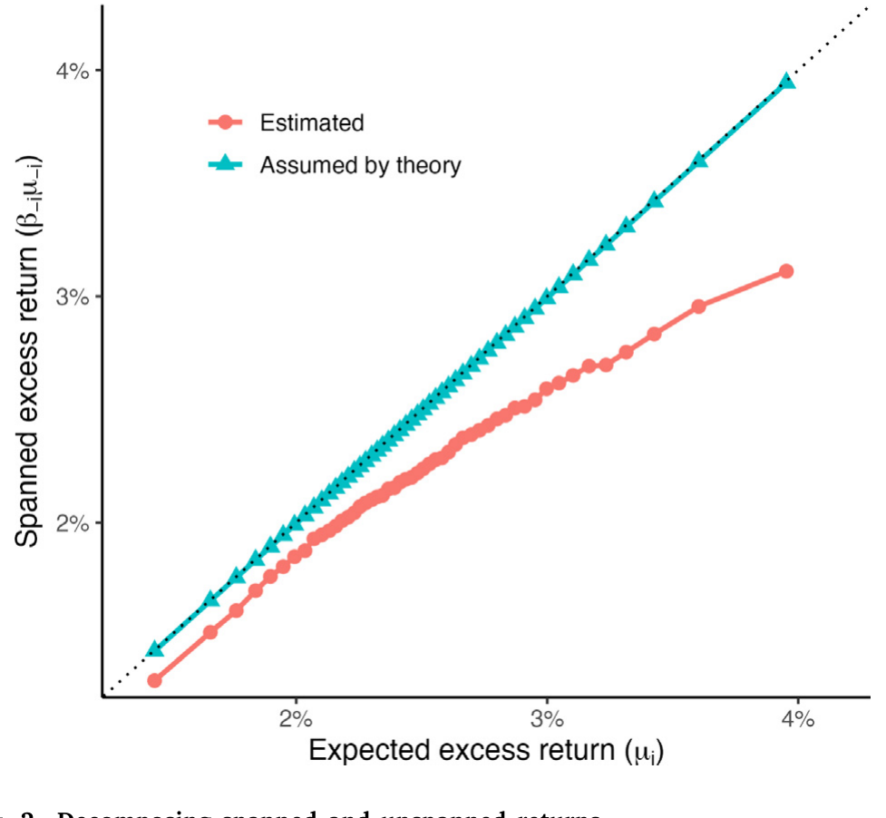
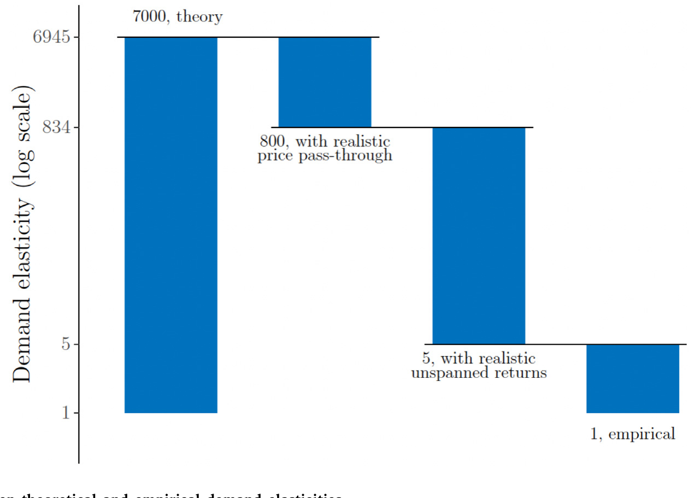
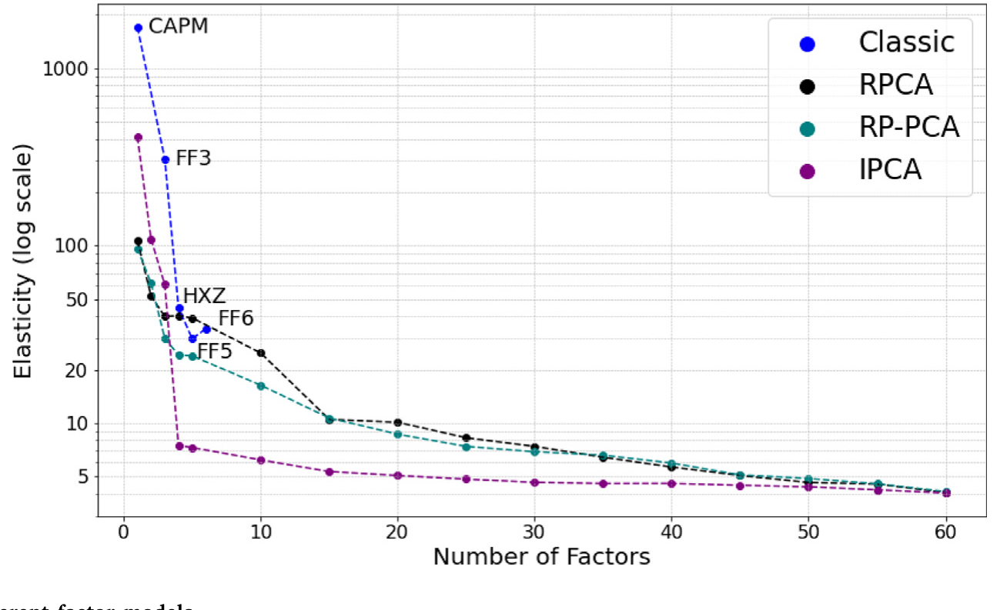
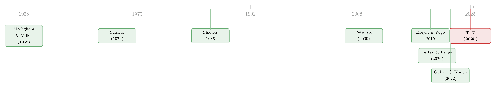

为什么「理性投资者」也会拒绝换股？——把需求弹性拆成两半
本文读的是 Davis, Kargar & Li (2025, JFE)：经典资产定价模型预测股票的需求弹性高达「几千」，可经验估计只有「大约 1」，整整差了三个数量级。作者把需求弹性拆成「价格传递 (price pass-through)」和「非张成收益 (unspanned return)」两块，证明只要把这两块换成真实数据估出来的值，理论预测就会从约 7000 一路跌到约 5——绝大部分缺口，根本不需要摩擦或行为偏差来解释。
1 一个差了三个数量级的谜题
先讲一件让资产定价学者寝食难安的事。
如果你打开一个标准的资产定价模型——CAPM 也好，Fama–French 也好——问它：「假如某只股票的供给突然多出 1%，价格会跌多少？」模型几乎会异口同声地回答：几乎不跌。Gabaix and Koijen (2022) 算过，经典模型里一只股票的需求弹性大约在 5000 量级，这意味着 1% 的供给冲击只会引起约 0.02 个基点（也就是 1%/5000）的价格变动，约等于零。换句话说，在理论世界里，每只股票的需求曲线都近乎水平：你想卖多少都行，价格纹丝不动，因为总有无数完美的「替身」等着接盘。
可现实呢？指数纳入、共同基金的申赎、被动资金的流动……一次又一次的经验研究告诉我们，资金流确实能把价格推得很高。Koijen and Yogo (2019) 用需求体系 (demand system) 估出来的弹性，大约只有 1 的量级。粗略地说，1% 的供给冲击对应着约 1% 的价格冲击——比理论预测大了整整三个数量级。
这不是「估得不太准」的那种小分歧，而是「差了一千倍」的鸿沟。任何号称要刻画真实市场的模型，都绕不开它。
于是一个很自然的解释浮出水面：是不是现实里有太多摩擦？投资者有业绩基准的牵绊、有杠杆约束、有交易成本，还有种种行为偏差——这些都会压低需求弹性（Gromb and Vayanos, 2010; Haddad et al., 2025）。这条路当然走得通。但 Davis, Kargar and Li 这篇文章偏要反其道而行：他们想看看，在一个完全没有这些摩擦、投资者绝对理性的「干净」世界里，需求弹性到底能不能自己掉下来。
答案是：能。而且掉得很彻底。
2 香蕉和股票，是两种完全不同的需求
要理解作者的思路，得先想清楚一件容易被忽略的事：对资产的需求，和对香蕉的需求，根本不是一回事。
你对香蕉的需求弹性，直接由你对香蕉的「偏好」决定——你就是喜欢吃香蕉，价格涨了就少买点。可投资者对一只股票并没有这种「原生偏好」。没人真的「喜欢」苹果公司的股票本身，人们要的是它未来带来的收益，最终是为了消费和财富。所以，当价格变动时，一个理性投资者要不要调仓，关键不在于他多爱这只股票，而在于价格的变动，改变了他对未来收益的判断有多少。
这个区别听起来像哲学，其实是全文的命门。它意味着需求弹性这个东西，本质上不取决于偏好参数，而取决于股票收益的统计性质——而这些性质，是可以从数据里估出来的。
接着，一个自然的问题是：到底是收益的哪些性质，决定了需求弹性？
3 把需求弹性拆成两半
作者的第一步，是给需求弹性下一个干净的定义。投资者在 \(t\) 时刻持有资产 \(i\) 共 \(Q_{i,t}\) 股，需求弹性 \(\eta_{i,t}\) 就是持股数对价格的（负）对数导数：
$$\eta_{i,t} \equiv -\frac{\partial \log(Q_{i,t})}{\partial \log(P_{i,t})}$$
弹性等于 4，就是说一只股票（因非基本面原因）价格跌 1%，投资者就想把持股增加 4%。
接下来是一个看似平凡、却暗藏玄机的代数。注意持股数 \(Q_{i,t}=A_t w_{i,t}/P_{i,t}\)，其中 \(A_t\) 是管理的总资产，\(w_{i,t}\) 是组合权重。把它代进去，并假设财富 \(A_t\) 外生（即忽略财富效应，这正是 Koijen and Yogo (2019) 的做法）：
$$\eta_{i,t} = -\frac{\partial \log(A_t w_{i,t}/P_{i,t})}{\partial \log(P_{i,t})} = 1 - \frac{\partial \log(w_{i,t})}{\partial \log(P_{i,t})}$$
请盯住这个 1。它来自分母里的 \(P_{i,t}\)：哪怕一个完全被动、一股都不买卖的持有者，价格跌 1% 也会让这只股票在他组合里的市值占比下降——从「持股数」的角度看，他「显得」需要买回来才能维持。这是一个纯机械的项。真正有意思的，是后面那个 \(\partial \log(w_{i,t})/\partial \log(P_{i,t})\)：一个主动优化的投资者，会因为价格变了而调整他想持有的权重。
然后是最关键的一步——用链式法则，把权重对价格的反应，拆成「权重对预期收益的反应」乘以「预期收益对价格的反应」：
$$\eta_{i,t} \approx 1 + \underbrace{\frac{\partial \log(w_{i,t})}{\partial \mu_{i,t}}}_{\text{weight responsiveness}} \times \underbrace{\left(-\frac{\partial \mu_{i,t}}{\partial \log(P_{i,t})}\right)}_{\text{price pass-through}}$$
两个全新的角色登场了：
- 价格传递 (price pass-through)，即 \(-\partial \mu_{i,t}/\partial \log(P_{i,t})\)：价格的变动，有多少「渗入」了下一期的预期收益 \(\mu_i\)。如果价格跌了之后下个月预期收益就涨上去（均值回复），传递就高；如果价格变动是持久的、不回头的，传递就低。
- 权重敏感度 (weight responsiveness)，即 \(\partial \log(w_{i,t})/\partial \mu_{i,t}\)：投资者的组合权重，对预期收益的变化有多敏感。
弹性高不高，就看这两块。经典模型把它们都设成了「极端值」，于是算出了天文数字。问题是——这两块到底该是多少？
4 模型：权重敏感度，等于「非张成收益」的倒数
价格传递还算直观，难点在权重敏感度。作者在这里给出了全文的理论内核，我们一步步推。
考虑一个具有常相对风险厌恶 (constant relative risk aversion, CRRA) 效用、收益服从对数正态、并面临卖空约束的投资者。如内部附录所示，这套设定近似等价于一个均值–方差问题：
$$\max_{w_t}\; \log \mathbb{E}(1+R_{p,t+1}) - \frac{\gamma}{2}\sigma^2_{p,t}$$
其中 \(\gamma\) 是风险厌恶系数，\(\sigma^2_{p,t}\) 是组合对数收益的条件方差。在卖空约束不绑定的那部分资产上，最优权重就回到了熟悉的均值–方差解：
$$w^{(1)}_t \approx \frac{1}{\gamma}\,\Sigma^{(1,1)-1}_t \mu^{(1)}_t$$
现在的问题是：单只资产 \(i\) 的权重 \(w_{i,t}\)，对它自己的预期收益 \(\mu_{i,t}\) 有多敏感？Stevens (1998) 给出的关键洞见是：要回答这个，必须把资产 \(i\) 中不能被其他资产复制的那一部分剥离出来。于是作者做了一个回归——把 \(i\) 的收益，投影到其余所有资产的收益上：
$$r_{i,t+1} = \mu_{i,\text{unspanned},t} + \beta'_{-i,t} r_{-i,t+1} + \epsilon_{i,t+1}$$
这个截距 \(\mu_{i,\text{unspanned},t}\)，就是本文的主角——非张成收益 (unspanned return)：资产 \(i\) 的预期收益里，无法用其他资产线性组合出来的那部分。取条件期望，它满足
$$\mu_{i,t} = \underbrace{\mu_{i,\text{unspanned},t}}_{\text{unspanned}} + \underbrace{\beta'_{-i,t}\mu_{-i,t}}_{\text{spanned}}$$
非张成收益度量的是这只股票有多「独一无二」：如果它有近乎完美的替身，截距就接近零（这正是 CAPM 这类经典模型的隐含假设）；如果它没有好替身，截距就不可忽略。

Figure 2: Decomposing spanned and unspanned returns
有了这个，命题 1 的推导就水到渠成。在均值–方差解里，单只资产的最优权重可以写成
$$w_{i,t} = \frac{1}{\gamma}\left(\frac{\mu_{i,\text{unspanned},t}}{\sigma^2_{i,\text{unspanned},t}}\right)$$
分子是非张成收益，分母 \(\sigma^2_{i,\text{unspanned},t}\) 是回归残差 \(\epsilon_{i,t+1}\) 的方差，即「非张成方差」。现在对 \(\mu_{i,t}\) 求导：由于 \(\mu_{i,\text{unspanned},t}=\mu_{i,t}-\beta'_{-i,t}\mu_{-i,t}\)，在固定其他资产时 \(\partial \mu_{i,\text{unspanned},t}/\partial \mu_{i,t}=1\)，于是
$$\frac{\partial \log(w_{i,t})}{\partial \mu_{i,t}} = \frac{1}{w_{i,t}}\cdot\frac{1}{\gamma}\cdot\frac{1}{\sigma^2_{i,\text{unspanned},t}} = \frac{1}{\mu_{i,\text{unspanned},t}}$$
最后一个等号，把 \(w_{i,t}\) 的表达式代回去，\(\gamma\) 和 \(\sigma^2_{i,\text{unspanned}}\) 全部约掉，只剩一个惊人简洁的结果：
$$\frac{\partial \log(w_{i,t})}{\partial \mu_{i,t}} = \frac{1}{\mu_{i,\text{unspanned},t}}$$
权重敏感度，就等于非张成收益的倒数。 直觉是这样的：如果一只股票有完美替身（非张成收益≈0），那么它的预期收益哪怕只动了一丁点，理性投资者就会在它和替身之间疯狂地大进大出——因为换仓几乎没有代价。反过来，如果它独一无二（非张成收益大），换仓就要承担它自己那份特异风险，投资者反而懒得动。越独特，越「黏」，需求越缺乏弹性。
把这一切拼起来，就得到了全文的核心方程：
5 经典模型，是如何算出「7000」的
弄清了配方，再回头看经典模型，就知道它的「7000」是怎么炼成的了——它在两块上都取了极端假设。
第一，价格传递取了 1（或 1/12）。 很多用来研究需求弹性的模型是静态的，假设收益只在下一期实现，这等于默认所有当期价格变动都会在下期完全回复——价格传递等于 1。退一步，Petajisto (2009) 假设价格变动在一年内回复，对应月度传递 1/12。仅仅把这个 1/12 换成下面要讲的经验值 0.01，弹性预测就从 7000 掉到约 800——一下子小了 9 倍。
第二，也是更要命的，非张成收益取得极小。 经典模型隐含地假设股票之间近乎完美替代，非张成收益小到约 0.001%（Gabaix and Koijen, 2022）。在作者的框架里可以解出，非张成收益大致与「资产数 \(N\) 的倒数」同阶——你假设市场上有成千上万只近乎完美的替身，非张成方差就被推向零，倒数（权重敏感度）就被推向无穷。这才是 7000 这个数字真正的来源。
换句话说，经典模型预测需求曲线水平，并不是因为它做了什么高深的假设，而是因为它偷偷假定了股票之间几乎可以无损互换。一旦这个前提站不住，整座大厦就塌了。
6 把真实数据塞进去：从 7000 到 5
那么真实数据说了什么？作者用月度美股数据，分别估了这两块。
价格传递。 用 Fama–MacBeth 回归，以滞后的对数价格预测下月收益，同时控制其他能预测收益的特征。结果约为 0.01——也就是说，每 1% 的、与现金流无关的价格下跌，只会让下个月的预期收益上升约 1 个基点。这和横截面里早已熟知的事实一致：短期反转（Jegadeesh, 1990）、动量（Jegadeesh and Titman, 1993）、长期反转（De Bondt and Thaler, 1985），这些价格的「可预测性」全都远小于一比一。本文的贡献不在于重新估出价格传递，而在于点明：弱的价格传递，直接导致低弹性。
非张成收益。 这需要预期收益和协方差矩阵的模型。作者用 Fama–MacBeth（基于常用股票特征）估预期收益，用日度收益的滚动一年窗口加上 Ledoit and Wolf (2004) 收缩估协方差。结果是：一只被纳入最优组合的「平均股票」，月度非张成收益约为 0.3%。请记住，经典模型假设的是 0.001%——真实值大了约 300 倍。正是这一块，把弹性从 800 进一步压到约 5。
整条路径，论文用一张瀑布图讲得明明白白：从经典的 7000，因价格传递降 9 倍到 800，再因非张成收益降约 160 倍到 5。剩下从 5 到经验估计的 1 那一小段，作者老实承认没有定论，可能是交易成本，也可能是别的摩擦——但那已经是零头了。

Figure 1: Explaining the gap between theoretical and empirical demand elasticities
注意作者的克制：他们没有去估需求弹性本身，也没有提出新的价格工具变量。他们只是估了收益的统计性质，然后让理论模型自己「吐」出弹性。这让结论更难被「内生性」之类的质疑击中——这是一个纯粹的、无摩擦的基准，正如 Modigliani and Miller (1958) 为无摩擦资本结构提供的那个基准。
7 非张成收益，其实就是「弱因子」
读到这里，习惯了因子模型的人可能会有点不适应：「非张成收益」听着很陌生，它和我们天天打交道的 alpha、因子，是什么关系？
但真正关键的一步，恰恰是作者在这里架起的那座桥。他们指出，高非张成收益，等价于存在「弱因子」(weak factors)——这正是 Lettau and Pelger (2020) 提出的概念：那些能解释预期收益的横截面、却解释不了多少收益时间序列波动的因子。
逻辑是这样的：早期的经典因子模型（CAPM、Fama–French 三因子）假设只有少数几个能解释大量共同波动的强因子被定价，言下之意就是「没有弱因子」，于是股票高度可替代、非张成收益≈0。但后续研究发现，要刻画横截面，需要越来越多、越来越「弱」的因子（Kelly, Pruitt and Su, 2019; Lettau and Pelger, 2020; Chen et al., 2023）。作者证明：当因子数目足够多时，这些模型必然隐含高非张成收益、从而低需求弹性。 图 3 把不同因子模型下的弹性画在一起，趋势一目了然——模型越「现代」、越能容纳弱因子，弹性就越低。

Figure 3: Demand elasticity for different factor models
于是，两条原本看似不相干的文献——「因子动物园为什么越来越大」和「需求曲线为什么向下倾斜」——在这里被缝到了一起。股票不是完美替代品，这件事既表现为「弱因子」，也表现为「低弹性」，它们是同一枚硬币的两面。（关于因子动物园与弱替代之间的联系，可参见《弱替代：因子动物园是从哪里冒出来的？》。）
作者还做了一个很有说服力的延伸：当把投资域 (investment universe) 限制到真实共同基金的范围时，弹性会更低。比如限制到行业型基金的持仓集合，一只「平均行业基金」中位数只持有 35 只股票，平均非张成收益升到 0.373%，对应弹性约 3.7，比全样本的 5 还要低。这个机制很干净：你能挑的替身越少，每只股票就越「独特」，需求就越黏。
8 文献脉络
把这条线索拉直了看，会发现这是一场跨越半个多世纪的拉锯。
最早，Scholes (1972) 论证股票应当是高度可替代的，不该是「独一无二的艺术品」——这是「需求曲线水平」一派的源头。但 Shleifer (1986) 用指数纳入做的经典研究捅破了这层窗户纸：需求曲线其实是向下倾斜的，资金流真的能推动价格。此后 Petajisto (2009) 把经典模型的弹性算到 6000 以上，把理论与经验的矛盾摆上了台面。
真正让这场争论升级的，是结构化的需求体系：Koijen and Yogo (2019) 用资产需求体系给资产定价，估出了「约 1」的低弹性；Gabaix and Koijen (2022) 进一步提出「无弹性市场假说」，把弹性差距推到了聚光灯下；Haddad et al. (2025) 则从竞争与被动投资的角度追问市场到底有多「有竞争性」。与此同时，资产定价的另一条线——从 Lettau and Pelger (2020) 的弱因子，到各路高维因子模型——悄悄准备好了解释的钥匙。
本文站的位置，正是这两条线的交汇点：它不去和经验估计争高低，而是回到投资组合选择的第一性原理，证明只要诚实地把收益的统计性质放进去，理性模型自己就会预测出无弹性的需求，并指认出「弱因子 = 高非张成收益 = 低弹性」这条贯穿始终的暗线。

9 评论与延伸（Q&A + 研究方向）
(a) 几个可能的疑问
Q：这里的「需求弹性」，和我们平时说的「需求曲线向下倾斜」是一回事吗？
是同一枚硬币的两面，但表述更精确。「曲线向下倾斜」是定性说法；需求弹性 \(\eta\) 是它的定量刻度——\(\eta\) 越小，曲线越陡，资金流的价格冲击越大。经典模型的 \(\eta\approx7000\) 对应近乎水平的曲线，经验的 \(\eta\approx1\) 对应明显倾斜的曲线。
Q：价格传递只有 0.01，是不是等于说市场几乎完全有效、价格根本不可预测？
恰恰相反，它说的是价格变动很「持久」。传递低，意味着今天的价格变动不会在下期被大幅纠正回去——预期收益的变化是持久的。这与诸多动态资产定价模型里「预期收益有持续性」的设定完全一致，并不需要市场无效。
Q：「非张成收益」和 alpha 是一回事吗？
不完全是，差别很微妙但重要。普通 alpha 是相对某个固定因子组合（比如市场）的截距，而这里的回归把资产 \(i\) 自己排除在外、用其余所有资产做解释变量。所以即便 CAPM 成立、按定义 alpha 为零，非张成收益仍可能非零（虽然很小）。它度量的是「可替代性」，不是「错误定价」。
Q：作者强调卖空约束，结论会不会是这个约束撑起来的？
不会。作者在正文和早期版本里都说明，去掉卖空约束，所有结论不变。引入约束只是为了贴近 Koijen and Yogo (2019) 的设定，并把分析限制在最优组合实际持有的那批资产上。
Q：从 5 到 1 的剩余缺口，凭什么甩给交易成本？这是不是「打扫战场」式的解释？
作者在这点上相当诚实，明说不对具体机制下定论。值得强调的是，他们的基准是「无摩擦最优投资者」——现实中有约束、有偏差的投资者，需求只会更无弹性。所以剩下的
5→1完全可以由任何进一步压低弹性的因素（交易成本、基准约束、行为偏差）来填，方向是一致的。
Q：「弱因子越多、弹性越低」，会不会是循环论证——因子动物园本身就是被低弹性「造」出来的？
这是个好问题，也是本文识别上最该警惕的地方。作者的非张成收益依赖于预期收益和协方差的估计模型，换一套模型，估出的非张成收益会变。他们的辩护是：跨多种估计方法，结果都停留在同一个数量级。但「用什么因子模型来定义可替代性」本身带着研究者的主观选择，这一点无法完全摆脱。
(b) 几个可能的研究问题与提案
1. 公司债的非张成收益与需求弹性。
【经济故事】公司债比股票更「独一无二」：同一发行人不同期限、不同条款的债券彼此难以替代，二级市场又高度分割、流动性差。按本文逻辑，公司债的非张成收益应当远高于股票，需求弹性应当更低——这恰好能解释为什么信用市场的价格冲击如此显著。 【可行性】中。数据用
TRACE（成交）+Mergent FISD（债券特征），可仿照本文用滚动窗口估协方差、用特征回归估预期收益。难点在于债券收益的非同步交易与缺失值，协方差估计需要更强的收缩。（与《谁在持有这张债券，决定了它的价格》的需求视角天然互补。）
2. 投资域限制如何让外资持有人「更黏」。
【经济故事】外资持有人常受授权、母国偏好、可投范围的约束，能挑的「替身」更少。本文已证明：投资域越窄，非张成收益越高、需求越无弹性。那么外资占比高的市场/券种，是否系统性地表现出更大的资金流价格冲击？这对理解外资进出与流动性的关系很关键。 【可行性】中。需要持有人层面的持仓数据（Koijen–Yogo 式）+ 各投资者的可投域刻画，识别上可借用本文「限制投资域→非张成收益上升」的机制做横截面对比。难点是准确界定每类投资者的真实可投集合。
3. 价格传递的时变性与流动性。
【经济故事】本文把价格传递当成一个相对稳定的统计量，但它很可能随流动性状况变化——危机中价格变动更持久（传递更低），需求更无弹性，从而形成「流动性枯竭 → 弹性下降 → 冲击放大」的正反馈。 【可行性】高/中。用 Fama–MacBeth 在不同流动性状态（如按
VIX、买卖价差分组）下分别估价格传递即可，数据现成。挑战在于把「时变弹性」与已有的流动性螺旋理论对接，做出超越相关性的因果论断。
4. 弱因子数目与做市能力。
【经济故事】若非张成收益等价于弱因子，那么一个市场上「有效因子数」的多寡，应当直接映射到做市商对冲库存的难易——替身越少，做市越难、报价越宽。可以把本文的「非张成收益」直接接到做市文献的库存风险上。 【可行性】中。需要做市商层面的库存与报价数据，识别上可用本文的非张成方差作为「对冲难度」的代理变量。数据可得性是主要瓶颈。
最后说说我作为读者的判断。
贡献上，这篇文章最漂亮的地方不是任何一个新估计，而是那个会计恒等式：\(\eta\approx 1+\text{price pass-through}/\mu_{\text{unspanned}}\)。它把一个吵了几十年、看似需要靠摩擦和行为来调和的「弹性之谜」，化简成两个纯粹由收益统计性质决定、可直接从数据读出的量。一旦你接受这个分解，「经典模型为什么错」就不再神秘——它错在偷偷假设了股票近乎完美替代。把这件事和「弱因子」「因子动物园」缝起来，更是一记漂亮的统一。
对识别的担忧，我最在意两点。其一，非张成收益对「用哪套预期收益/协方差模型」相当敏感，而这恰恰是研究者自由度最大的地方；作者用「跨方法同数量级」来辩护，但 5 和 1 之间本就只隔一个数量级，估计上的腾挪空间不算小。其二，全文是部分均衡的——价格性质外生给定，没有把价格内生化到一般均衡里。当大量投资者都按这套逻辑行动时，价格传递和非张成收益本身会不会内生地变化？这一步留给了未来。
后续最想看到的，是把这套分解搬到公司债和外资持有人上。股票已经「不够可替代」了，信用市场和受限投资者只会更甚——如果本文的机制在那里同样成立，我们或许就握住了一把统一解释「为什么信用市场的资金流冲击如此之大」的钥匙。
参考文献
- Davis, C., Kargar, M., Li, J. (2025). Why do portfolio choice models predict inelastic demand? Journal of Financial Economics 172, 104096.
- Gabaix, X., Koijen, R.S. (2022). In Search of the Origins of Financial Fluctuations: The Inelastic Markets Hypothesis. NBER Working Paper 28967.
- Haddad, V., Huebner, P., Loualiche, E. (2025). How competitive is the stock market? Theory, evidence from portfolios, and implications for the rise of passive investing. American Economic Review 115(3), 975–1018.
- Kelly, B.T., Pruitt, S., Su, Y. (2019). Characteristics are covariances: A unified model of risk and return. Journal of Financial Economics 134(3), 501–524.
- Koijen, R.S., Yogo, M. (2019). A demand system approach to asset pricing. Journal of Political Economy 127(4), 1475–1515.
- Ledoit, O., Wolf, M. (2004). Honey, I shrunk the sample covariance matrix. Journal of Portfolio Management 30(4), 110–119.
- Lettau, M., Pelger, M. (2020). Factors that fit the time series and cross-section of stock returns. Review of Financial Studies 33(5), 2274–2325.
- Modigliani, F., Miller, M.H. (1958). The cost of capital, corporation finance and the theory of investment. American Economic Review 48(3), 261–297.
- Petajisto, A. (2009). Why do demand curves for stocks slope down? Journal of Financial and Quantitative Analysis 44(5), 1013–1044.
- Scholes, M.S. (1972). The market for securities: Substitution versus price pressure and the effects of information on share prices. Journal of Business 45(2), 179–211.
- Shleifer, A. (1986). Do demand curves for stocks slope down? Journal of Finance 41(3), 579–590.
- Stevens, G.V.G. (1998). On the inverse of the covariance matrix in portfolio analysis. Journal of Finance 53(5), 1821–1827.